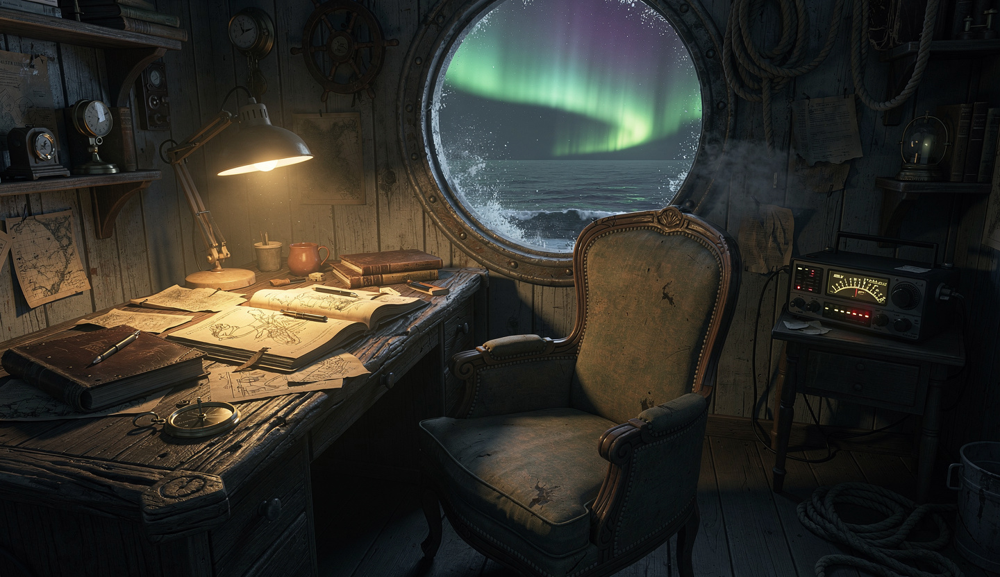

>> SYSTEM: Wesley_Creative_v1.0
> STATUS: Simulation loaded
>> SUBJECT: Ensign Wesley
> ITERATIONS: 3 rounds complete
>> TEACHERS: Seed-2.0-mini · Seed-2.0-pro · Hermes-405B
>> READY

Beneath Alaska's Bering Sea, where the sun paints its fiery farewell, and night descends with a depth that mirrors my most harrowing experiences—a harrowing night when a wave slammed a crate beside my bunk during a gale—I, Wesley, ensign of this fishing vessel, dream. My heart yearns not for grand palaces or intricate machines; instead, it seeks an intimate sanctuary, a haven that mirrors the warmth and solace of home within the harshness of maritime life.
Upon this island of driftwood and stone, I envision a cozy study, a refuge where the relentless rhythm of our lives at sea finds a moment's respite from its relentless pace. The walls hum with the voices of literature—tales beyond fishing manuals that stoke my insatiable curiosity, whispered by authors who have braved the Bering Sea's icy grip.
My desk, a masterpiece crafted from Bering Sea driftwood, stands as a testament to our vocation and a symbol of resilience. Its weathered surface bears worn journals for chronicling reflections, dreams, and stories yet untold—the remnants of tales that speak not of triumph but of the human spirit's quiet strength in enduring hardship.
A panorama of books lines the walls: nautical chronicles alongside explorations of far-flung lands, their spines a testament to the human quest for knowledge and freedom. Nearby, an antique armchair cradles an old radio, its dial perpetually tuned to maritime news, weather forecasts, and educational podcasts—constant companions to the ever-changing seascape.
A corner, however, is reserved for a unique collection: books salvaged from wrecked vessels, their pages yellowed by time and salt. These volumes are archives of lives long past, bound together by shared elements that have nurtured my blood, sweat, and tears—a reminder of the sea's capricious nature and the stories it has swallowed.